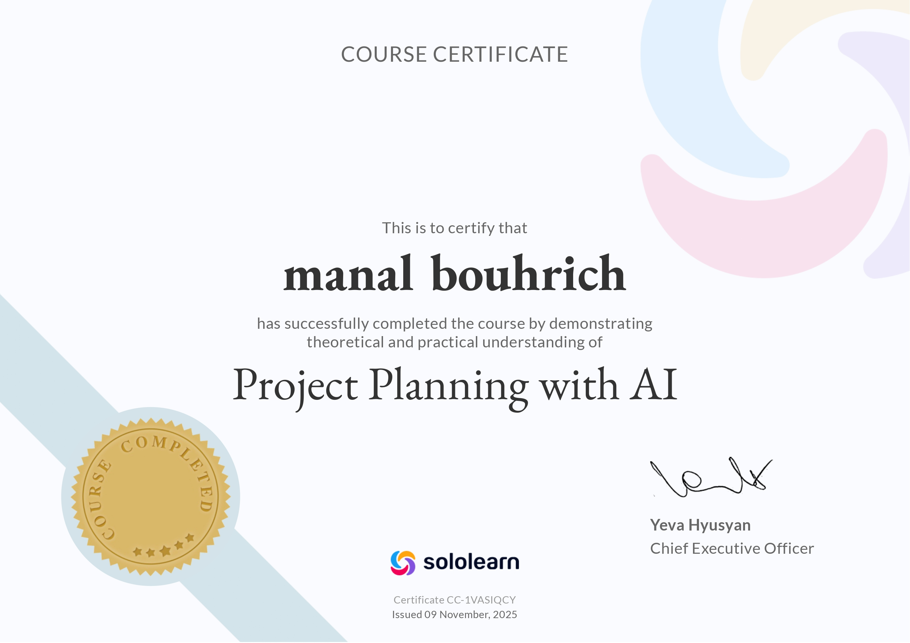

Travaux Demandés
TD et TP réalisés en classe
TD n°1 - Introduction aux Systèmes d'Information
Découverte des concepts fondamentaux des systèmes d'information et étude des PGI.
Introduction aux Systèmes d’Information TD1-SI
TD n°2 - Étude de cas : Chaîne de supermarchés (RetailMarket SA)
Analyse d'un système d'information dans le secteur de la grande distribution.
TD n°3 - Processus de gestion & modélisation
Réalisation de diagrammes de flux-acteurs et événement-résultat grace a draw.io.
TD n°5 - UML : Use Case et Diagramme de Classe
Modélisation UML avec diagrammes de cas d'utilisation et diagrammes de classe.
TP n°3 - Projet de Système d’Information / PGI Web
Sujet choisi : Application de Gestion d'Événements
Notes de Cours
Prises de notes personnelles et synthèses
Cycle de Vie du SI & Scénarios d’Utilisation
Étapes de réalisation d’un projet informatique et modélisation des interactions avec le système.
Documents d'un Système d'Information
Documentation technique et fonctionnelle
Introduction et concepts des Systèmes d’Information (SI)
Pose les bases théoriques du SI, son rôle dans les organisations et la distinction entre données, information et connaissance.
Gestion de projet SI
Explique ce qu’est un projet SI, les acteurs, priorités, cycle de vie et facteurs clés de réussite. Montre comment un projet SI répond à l’évolution de l’organisation.
Cahier des charges et documentation projet
Montre comment formaliser les besoins d’un projet SI à travers des documents pratiques : cahier des charges, devis, propositions commerciales.
Modélisation et livrables du SI
Traite de la modélisation UML (diagrammes des cas d’utilisation) et des livrables du SI, de l’analyse des besoins à la mise en production. Comprend un exemple concret (Odoo).
Certifications
Attestations et certifications obtenues
Introduction à SQL
Organisme : Yeva Hyusyan, CEO
Planification de Projet avec l'IA
Organisme : Yeva Hyusyan, CEO
Projet Final
Projet intégrant les compétences acquises
Gestion des Événements :
Application web de gestion des événements pour l’établissement, permettant la planification, l’inscription des participants, le suivi des places disponibles et l’édition de rapports. Inclut un calendrier interactif, la gestion des inscrits, les notifications et le contrôle des accès, offrant une solution numérique complète pour faciliter l’organisation des événements.
L’application a été mise en ligne sur un hébergement gratuit afin de permettre les tests et la démonstration. Toutefois, ce type d’hébergement ne fournit pas de certificat SSL, ce qui entraîne l’apparition d’un avertissement « site non sécurisé » sur certains navigateurs comme Google Chrome. Cependant, l’accès reste fonctionnel sur d’autres navigateurs comme Microsoft Edge, permettant une utilisation fluide pour les tests et démonstrations.
Diaporama de Soutenance
Présentation PowerPoint complète de la soutenance
Présentation PowerPoint
Diaporama complet de la soutenance, réalisé au format PowerPoint pour présenter les résultats du projet.
Télécharger le PowerPoint →Autres Ressources
Ressources complémentaires et veille technologique
🔎 Articles de veille
Sélection d’articles récents sur les tendances SI et ERP.
- Gartner – Principales tendances technologiques 2025. gartner.fr
- Appvizer – Comparatif Odoo vs Dolibarr (ERP open source). appvizer.com
- Triskell Software – Tendances de la gestion de projet 2025. triskellsoftware.com
🧠 Tutoriels
Ressources pratiques pour approfondir les notions vues en cours.
- Monday Work Management – Guide complet de la gestion de projet. monday.com
- Itaia – Tendances IT à suivre pour les PME en 2025. itaia.fr
🌐 Liens utiles
Sites et outils recommandés.
- Diagrams.net – Création de diagrammes UML. diagrams.net
- Notion – Gestion de projet et documentation. notion.so
- Odoo – ERP open source complet. odoo.com